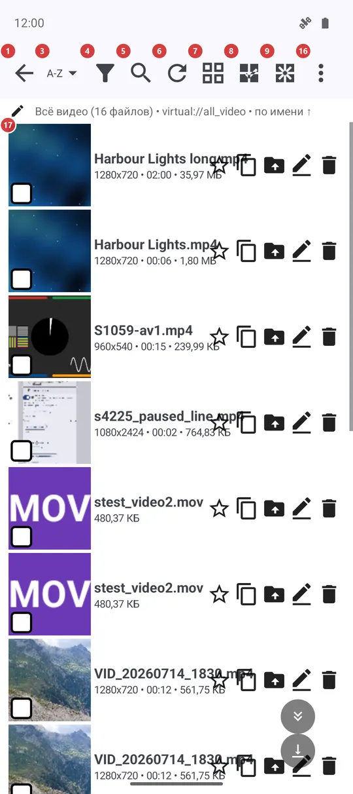
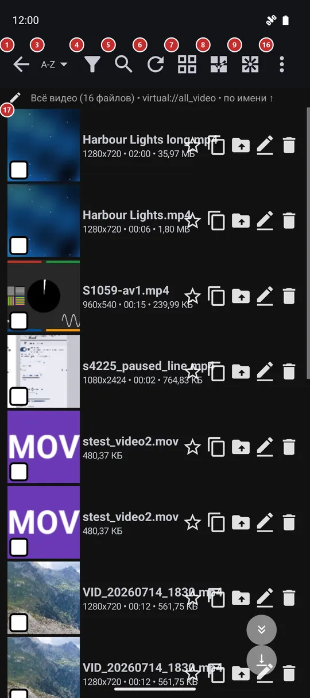

Браузер файлов
Для чего этот экран
Браузер файлов показывает содержимое одного ресурса: папки и файлы плитками или списком. Здесь вы находите нужный файл, сортируете и фильтруете папку, выделяете файлы и выполняете над ними действия или запускаете воспроизведение.


Порядок действий
- Нажмите файл в списке 17, чтобы открыть его в плеере. Нажмите папку, чтобы зайти в неё: имя папки 2 покажет, где вы находитесь, а «Назад» 1 поднимает на уровень выше.
- Порядок задаётся кнопкой «Сортировка» 3, список сужает «Фильтр» 4, а в «Поиск» 5 можно набрать несколько букв имени. «Обновить» 6 заново проверяет папку, если файлы изменились вне приложения.
- Кнопка 7 переключает плитки и список - когда нужно больше миниатюр или больше подробностей на экране.
- Нажмите и удерживайте файл, чтобы начать выделение, или воспользуйтесь «Выбрать всё» 8. Внизу появится панель действий: «Копировать» 18, «Переместить» 19, «Переименовать» 20, «Удалить» 21, «Поделиться» 23 и «Архив» 24.
- «Отменить» 22 возвращает последнее удаление или перемещение, пока приложение ещё помнит операцию.
- «Воспроизвести» 15 запускает показ в плеере, а «Случайный» 14 воспроизводит файлы в случайном порядке.
- «Создать папку» 10, «Создать заметку» 11, «Создать рисунок» 12 и микрофон 13 добавляют новые файлы прямо здесь; всё, что не поместилось на узком экране, ждёт в меню 16 вместе с «Справкой».
Элементы
Навигация и поиск
1НазадВозвращает на шаг назад: из текущей папки, а из верхней папки - на главный экран.
Кнопка «Назад» устройства делает то же самое, поэтому из глубокой папки вы выходите по одному уровню, а не вылетаете из ресурса одним нажатием.
2Текущая папкаПоказывает папку, в которой вы находитесь, и позволяет перейти в любую папку выше.
Кнопка появляется, когда вы зашли в подпапку. Нажмите её, чтобы открыть список папок от ресурса до текущей, и выберите любую - вы сразу окажетесь там.
3СортировкаПоказывает, как упорядочены файлы, и открывает меню для смены порядка.
Выберите имя, дату, размер или тип; для папки с файлами одного вида есть ещё исполнитель, название, длительность или дата съёмки фото. «Случайно» перемешивает список, и повторный выбор перемешивает ещё раз. «Ручной порядок» позволяет перетаскивать файлы в нужном порядке. Порядок запоминается для каждого ресурса.
4ФильтрСужает список по дате, размеру и типу медиа.
Задайте диапазон дат, диапазон размера в мегабайтах или отметьте нужные типы медиа и примените. Небольшое число на кнопке показывает, сколько фильтров включено, а строка под панелью - какие именно. Фильтр относится к этому ресурсу, а кнопка сброса отменяет его целиком.
5ПоискНаходит файл по нескольким буквам имени.
На панели появляется поле поиска, и список сужается по мере ввода, без повторной проверки папки. Закройте поле, чтобы снова увидеть всё.
6ОбновитьЗаново проверяет папку на новые и изменённые файлы.
Нажмите после копирования файлов из другого приложения или с компьютера, а также если сетевая папка была недоступна. Потянув список вниз, можно сделать то же самое.
7Сетка / списокПереключает папку между сеткой миниатюр и списком.
Сетка показывает плитку-картинку для каждого файла, список - по строке на файл и больше места для текста. Выбор запоминается. Ресурс только с музыкой остаётся списком: показывать нечего.
Выделение и новые файлы
8Выбрать всёВыделяет все файлы в папке.
Удобно перед копированием, перемещением или удалением, когда нужна вся папка. Начать выделение можно и долгим нажатием на файл, отмечая файлы по одному.
9Снять выборСнимает выделение.
Панель действий внизу при этом пропадает. Нажатие на отмеченную галочку снимает выделение только с этого файла.
10Создать папкуДобавляет подпапку в текущую папку.
Работает на папках устройства, сетевых папках и облачных ресурсах. На ресурсе только для чтения кнопка скрыта.
11Создать заметкуНачинает новую текстовую заметку в текущей папке.
Заметка сохраняется, только когда вы её сохраните, и имя спрашивается именно в этот момент. На ресурсе только для чтения кнопка скрыта.
12Создать рисунокОткрывает чистый лист редактора рисунков.
Рисунок сохраняется прямо в текущую папку. На ресурсе только для чтения кнопка скрыта.
13Микрофон: запись аудиоЗаписывает голосовую заметку в текущую папку.
Нажмите и держите - идёт запись, отпустите - она остановится; короткое нажатие лишь напомнит, что кнопку нужно удерживать. Когда запись закончится, приложение спросит имя файла.
Воспроизведение и меню
14СлучайныйВоспроизводит файлы в случайном порядке.
Кнопка есть, когда в папке только один вид медиа, например только фото или только музыка.
15ВоспроизвестиЗапускает показ в плеере.
Он начинается с файла, который вы смотрели последним в этом ресурсе, а если такого нет - с первого выделенного файла или с начала списка. Плеер открывается в режиме показа и сам переходит к следующему файлу.
16Ещё: действия с ресурсомОткрывает меню со всем, чего нет на панели.
Команды, не поместившиеся на узком экране, переезжают сюда, так что ничего не пропадает. В меню есть и действия с ресурсом, например поиск дубликатов, «Настройки программы» и «Справка», которая открывает эту страницу; клавиша F1 открывает её тоже.
Файлы
17ФайлыФайлы и папки ресурса.
Нажмите папку, чтобы открыть её, и файл, чтобы просмотреть или воспроизвести. В каждой строке есть звёздочка, которая добавляет файл в избранное, и четыре кнопки, чтобы скопировать, переместить, переименовать или удалить именно этот файл; в настройках их можно свернуть в меню «три точки» на строке. Свайп влево или вправо запускает быстрое действие, которое выбирается в настройках. Под именем стоит вторая строка с самым важным: у фото это разрешение и дата.
- Отмена
- Удаление сначала спрашивает подтверждение, а «Отменить» на панели действий возвращает файлы, пока приложение ещё помнит операцию.
Действия над выделенным
18КопироватьКопирует выделенные файлы в выбранное вами место.
Назначение выбирается в диалоге из ваших ресурсов-назначений. Долгое копирование может идти в фоне, пока вы продолжаете просмотр.
19ПереместитьПеремещает выделенные файлы в выбранное вами место.
Тот же диалог, что у копирования. Когда перемещение закончится, файлов в этой папке не останется.
20ПереименоватьПереименовывает выделенный файл.
Работает с одним файлом за раз и открывает диалог, только когда выделен ровно один файл.
21УдалитьУдаляет выделенные файлы после подтверждения.
Сначала приложение просит подтвердить удаление. Сразу после этого «Отменить» может вернуть файлы.
- Отмена
- «Отменить» появляется на этой же панели сразу после удаления или перемещения.
22ОтменитьВозвращает последнее удаление или перемещение.
Кнопка остаётся на панели, пока приложение ещё помнит операцию.
24АрхивУпаковывает выделенные файлы в один архив.
Кнопка есть у ресурса в собственной памяти этого устройства.